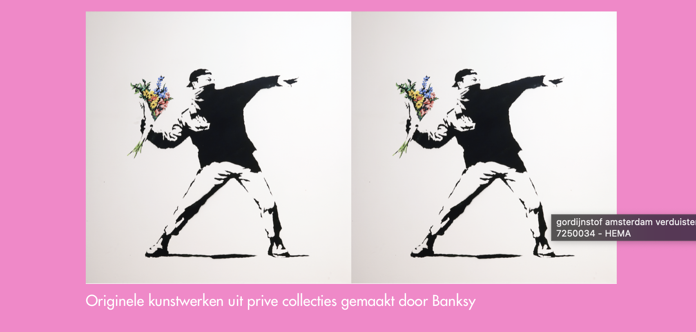
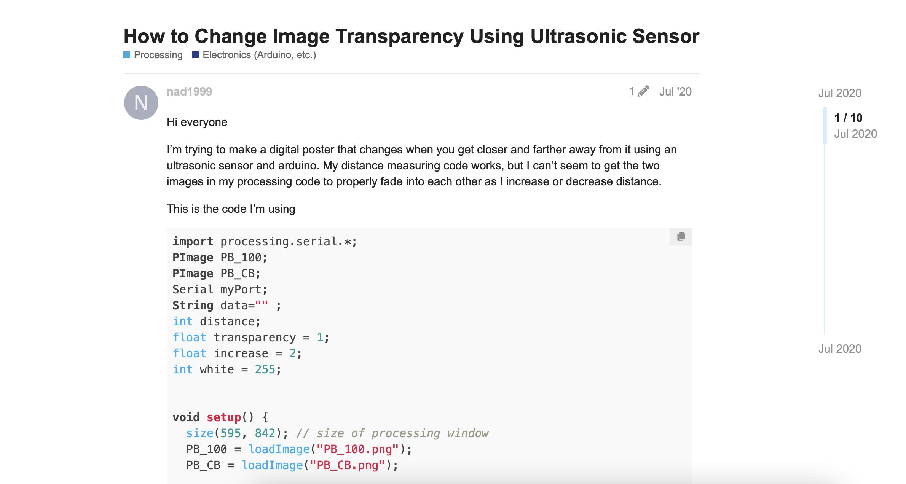
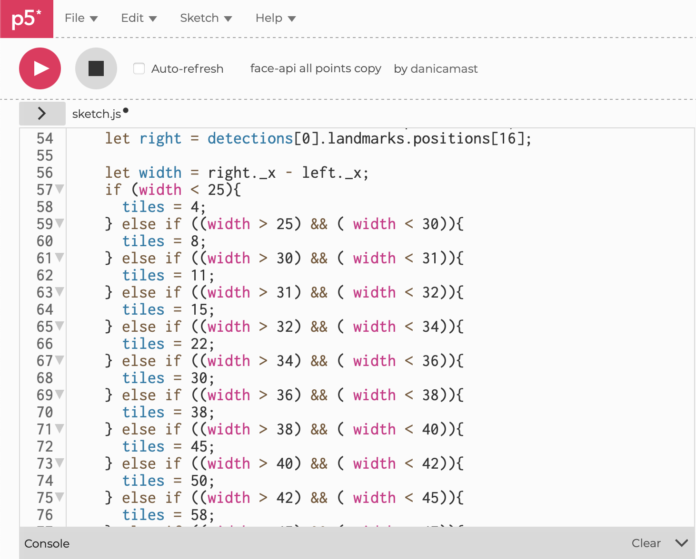
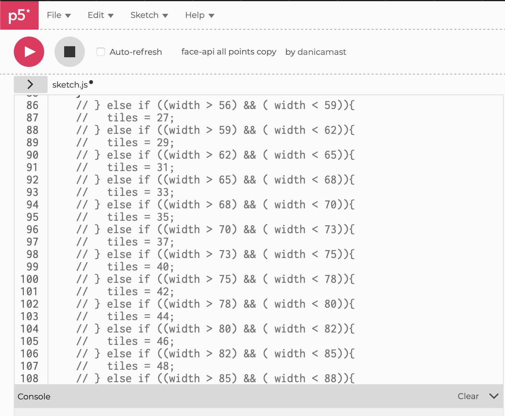
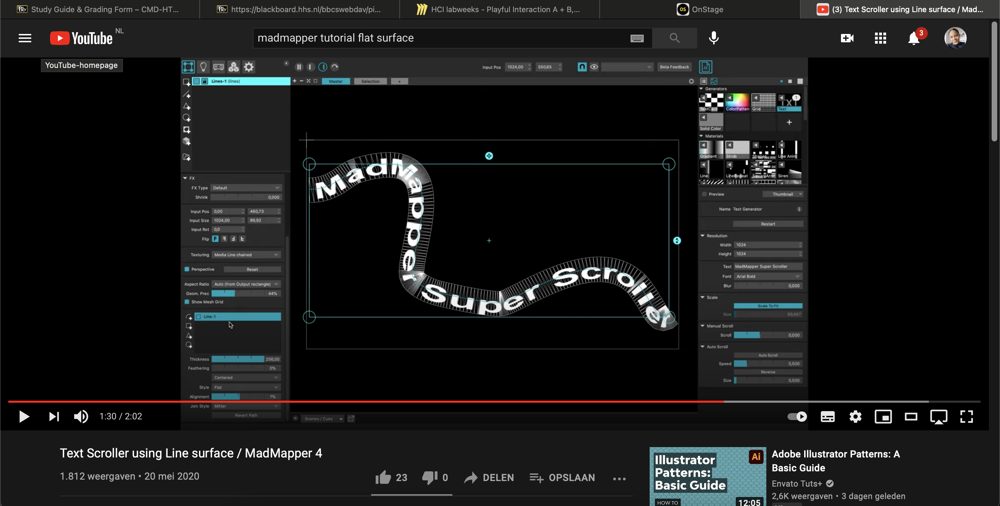
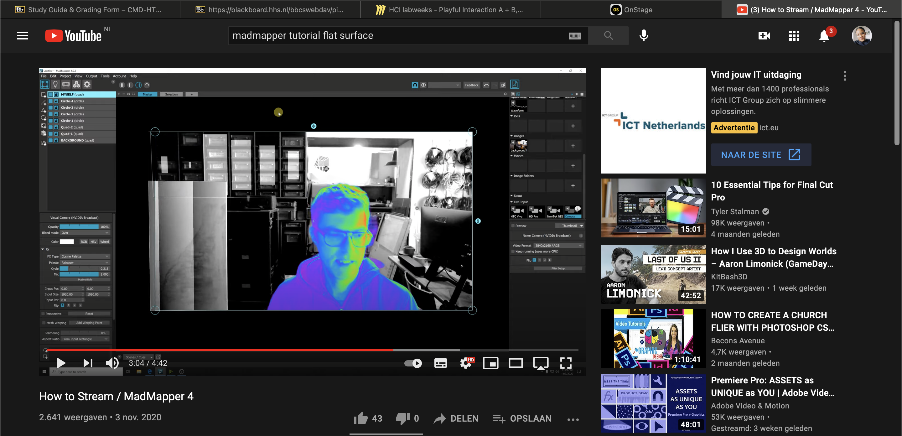
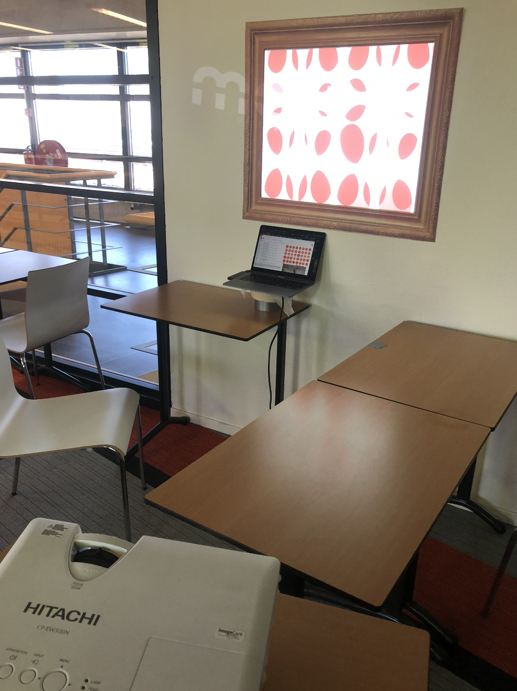
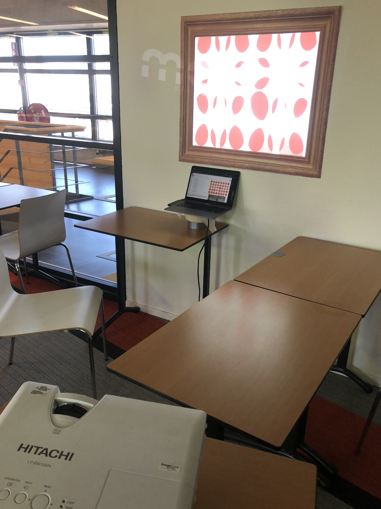

Op de eerste dag hebben Anouk en ik veel gebrainstormd. Na de twee kick-off’s van die dag hebben we een eigen Miro board gemaakt en alle inspiratie die in het Miro board van Playful Interaction staan overgenomen. We hebben de software doorgenomen en bekeken of we daar iets mee konden doen. We zijn voor inspiratie op Pinterest gaan kijken, YouTube, Google en toen kwamen we bij musea uit. Hier zijn wat voorbeelden van wat ik heb gevonden: Video 1, Video 2 (Iets maken en de animatie koppelen met audio), Video 3, Video 4 (Een smart mirror idee dat de 'mood' kan aflezen van de gebruiker), Video 5 (Zijn YouTube kanaal heeft heel veel interessante video's die ik heb bekeken voor inspiratie.) Anouk had het over het Moma museum en ik dacht meteen aan het Moco museum. Bij allebei hebben ze te gekke kunstwerken en wij wilde kijken voor inspiratie. Tijdens het scrollen kwamen we met ideeën en die zeiden we meteen hardop tegen elkaar en zo ontstonden meer ideeën. Ik zag bijvoorbeeld een kunstwerk van Banksy van een rioter die een bos bloemen in zijn hand heeft en kreeg toen een idee. Dat als je op een knop klikt (of een andere sensor) er een animatie zou plaatsvinden, dus de bos bloemen zouden gegooid worden. Hierdoor kreeg Anouk een idee met dat je een bestaand en bekend kunstwerk zou gebruiken en als iemand dichtbij komt, het gezicht van diegene als het ware gemorphed wordt in het kunstwerk met een mooie lijst eromheen. Hier waren we meteen erg enthousiast over, maar we bedachten ons ook gelijk; is dit haalbaar binnen een paar dagen; Hebben wij de kennis of skills om dit te doen. Omdat we dus twijfels hadden zijn we wel op onderzoek gegaan om te kijken hoe andere dat hebben gedaan maar we konden niet heel veel duidelijke filmpjes vinden; dit zijn er een paar: Video 1 We hebben ook op de website van Arduino gekeken voor inspiratie. Anouk kwam toen iets tegen van iemand die een LED strip had gekoppeld aan zijn Arduino board en de belichting had vastgeplakt aan een tafel. Toen dachten wij hoe leuk is het als je dit binnen een kubus doet. Met dit idee gingen we ook itereren van door een sensor veranderd de kleur, door gebruik te maken van een mood swing veranderd de kleur etc. We hadden ook een idee, maar die was nog vrij vaag om een wereldbol te maken en we moesten nog bedenken wat we daarmee wilde doen. Een real-life schaakspel was een idee, geïnspireerd door The Queen’s Gambit. We hebben ook opnieuw een kijkje genomen naar het PowerPoint bestand van week 4 en een paar artiesten bezocht die behandeld waren. Maar hier was niet iets nieuws uitgekomen. Onze eerste dag bestond dus uit onderzoek naar ideeën, de haalbaarheid ervan en itereren.
De eerste dag ging voor mijn gevoel erg goed. We hebben vanuit huis gewerkt. Ik heb op meerdere sites voor inspiratie gezocht, denk aan: Pinterest, Google, Powerpoint van lesweek 4 erbij gehaald en daar bij de voorbeelden gekeken. Ik heb zoveel mogelijk verzameld en in een Miro board geplaatst. Ik heb gekeken naar de Arduino opdrachten, welke sensor we eventueel willen gebruiken, welke software etc. Op YouTube heb ik ook voorbeelden opgezocht van playful interaction en ik heb wat video's over eventuele software gekeken en wat mensen daar allemaal mee maken (madmapper). Ik ben blij met hoe het vandaag is gegaan, omdat we echt op 1 lijn zitten. We vullen nu al heel goed elkaars ideeën aan en itereren zo ver het kan op de eerste dag.
Op de tweede dag konden we naar school. Hier hebben we ons meest enthousiaste idee uitgelegd aan Tim en ondanks dat wij dachten dat het niet haalbaar was, gaf Tim aan dat het juist een heel goed idee is. Het concept van gezichten morphen moesten we wel achterwege laten, omdat we niet heel goed zijn in coderen. Door wat aan te passen zoals verschillende lagen maken in Photoshop en daar iets mee proberen kunnen we het idee wel realiseren. We hebben dus oefeningen van de workshops erbij gehaald en gekeken met welke sensor we willen werken, al vrij snel hadden we de Ultrasonic Proximity Sensor gekozen. Om weer even te oefenen met de sensor hebben we opnieuw opdracht 11 gemaakt. Hierna hebben we een opdracht opgezocht via Arduino.cc. Hier zagen we een opdracht die gebruik maakt van de sensor en LED lampjes. Dit hebben we ook uitgevoerd en dat is gelukt. Vervolgens hebben we, wat wij zien als stap 2, Arduino en Processing met elkaar gekoppeld. Voor opdracht 12 moesten we deze twee programma's met elkaar koppelen en toen moest je gebruik maken van een potentiometer. Gelukkig met wat hulp van Tim zijn we erachter gekomen dat de code niet zo heel veel veranderd moest worden.
Vandaag hebben we een goede dag gehad. Ik heb gekeken naar projecten voor inspiratie, kijken welke van de paar concepten die we hadden het leukst is en haalbaar en eventuele aanvullingen. Dit bleek uiteindelijk nog wel een aardige zoekwerk te zijn, maar na een paar uur zoeken (met Anouk) hebben we iets gevonden waarin gebruik werd gemaakt van de ultrasonic sensor. We wisten op dat moment al dat we die willen gebruiken en wilde beginnen met kleine stappen om de sensor werkend te krijgen en te begrijpen. Omdat we het handiger vonden om met z'n tweeën aan 1 project te werken, hebben we ervoor gekozen om het met 1 breadbord te maken. In dit geval deed Anouk alle kabels op de juiste plek en gaf ik aan wat daarna moest.
Dag 3 was helaas niet een hele productieve dag. We wilde oppakken waar we gister mee gestopt waren en kwamen erachter dat de code die we online gevonden hadden, niet klopt. Dus hebben we iets nieuws geprobeerd wat ik van te voren had gevonden en Anouk kwam later ook op dezelfde website terecht. Iemand wilde foto's laten faden naar elkaar en dat is iets dat wij uiteindelijk ook willen proberen. Maar we kwamen dit in een online forum tegen en degene die een probleem had, had alleen haar Processing code gedeeld. We liepen lang vast want we begrepen bepaalde termen niet en konden het probleem zelf niet oplossen. Daarna zijn we naar de online helpdesk gegaan en daaruit hebben we een nieuwe coderegel ontvangen maar helaas is ons probleem nog niet opgelost. We hebben hier uren aan gewerkt, maar helaas is het niet gelukt. Morgen moeten we naar school dus dan kunnen we opnieuw voor uitleg vragen.
Vandaag was een wat mindere goede dag voor ons. We kwamen niet zo snel uit onze problemen en liepen steeds vast. Ik heb gegoogeld en gegoogeld om te kijken hoe we eruit kwamen. Uiteindelijk had ik een forum gevonden waarin iemand een soortgelijke vraag stelde en die kreeg daar vervolgens antwoord op. We probeerde te kijken of het antwoord ook ons probleem kon oplossen, maar helaas. Omdat we vandaag ook weer op afstand werkte, merkte we ook dat we minder efficiënt bezig waren. Maar toch was ik blij met onze vooruitgang.
Op dag 4 mochten we weer naar school. Op school hebben we uitleg gevraagd over ons probleem. We zijn toen een stap verder gekomen en kregen ook als tip om de delay aan te blijven passen en kijken wat er zou gebeuren. Hier hebben we een tijdje aangezeten. Op YouTube wilde ik een video vinden waarin iemand dit ook deed, een afbeelding van de een naar de ander laten faden. I.p.v. heb ik een andere creatieve oplossing gevonden. Omdat we dat faden even wilde laten en op iets anders wilde focussen hebben we die tutorial bekeken. We zijn vervolgens hiermee verder gegaan, hebben gekeken naar wat de code doet en vervolgens een beetje gespeelt met de code. In de tutorial wordt gebruik gemaakt van mouseX en wij willen de code koppelen aan de ultra sonic sensor. Na wat hulp van docenten en zelf wat uitvogelen is het 'gelukt'. Het werkte in ieder geval, maar omgekeerd. De rest van de dag probeerde we het goed te krijgen. Wij willen namelijk dat als iemand dichtbij de sensor is, de afbeelding scherp is en als je op afstand bent dat het effect afneemt en de ellipses groter worden. We zijn er op deze dag niet uitgekomen en gaan hier morgen verder aanwerken. We willen de tutorial opnieuw bekijken en de code snappen die wordt gebruikt.
Ik vond het een erg productieve dag. We hebben hulp gevraagd waar we het bij nodig hadden en ook zelf geprobeerd om het een en ander op te lossen. We liepen in de ochtend nog vast en hadden nog steeds een probleem die we niet zo snel konden oplossen. Terwijl we op hulp aan het wachten waren, keek ik of ik iets op YouTube kon vinden dat ons probleem kon oplossen. Maar toen kwam ik een video tegen, waarin iemand coole dingen codeert in Processing. De video staat hierboven gelinkt. We hebben verder hiermee gespeeld en toen we het werkend kregen met een mouse over effect, wilde ik kijken hoe we het leuker konden maken met kleur. Daarmee heb ik ook veel getest. Ik heb foto's gevonden met een goede contrast en ook met een minder goede contrast, ik heb gekeken hoe het eruit ziet als je alleen de fill een kleur geeft en hoe het eruit ziet als je ook de stroke een kleur geeft. Bekijk hieronder een filmpje om een voorbeeld te zien van wat ik heb getest.
Vandaag zijn we verder gegaan met het uitzoeken van de code. We dachten dat het ons heel lang zou duren om de code te inverten, maar dit viel erg mee. We hebben allebei de tutorial opnieuw bekeken om de code te begrijpen, maar hierdoor hadden we ons probleem niet opgelost. We zijn gaan kijken bij de Arduino opdrachten om te zien hoe daar gebruik werd gemaakt van de map() function. We hebben toen bedacht om een invert te creeëren moeten we misschien de waarde omdraaien. Dus i.p.v. val = map(val, 0, 1023, 0, 255); hebben we de waarde in de serial monitor bekeken. De laagste waarde was 3 en de hoogste 60 (dit hebben we later iets verlaagd om het wat soepeler te laten verlopen). Toen zag het er zo uit: val = map(val, 3, 60, 0, 255); en om de invert te creeeëren hebben we: (val, 3, 60, 60, 3); gedaan en we hebben nog 2 zinnen van opdracht 7 toegevoegd, toen werkte het. We wilde toen kijken of het mogelijk was om de webcam te koppelen aan onze code, zodat we geen gebruik van een afbeelding hoefde te maken. In Processing lukt dit dus niet op een Mac en probeerde het vervolgens in P5.js. We hebben de Processing code geconverted naar P5 code, maar helaas werkte het nog niet. Na veel te proberen en het falen wisten we even niet meer wat we moesten doen. We besloten om terug te gaan naar onze eerste idee, wat werkte. Maandag gaan we opnieuw extra ideeën bedenken en beginnen dan verder met wat meer rust aan ons hoofd.
Vandaag hebben we gewerkt aan het converten van Processing code naar P5 code, dit heb ik in een converter website gedaan dankzij de tip van Danica. We merkte dat de code niet goed was en wiste niet precies wat we moesten aanpassen om het werkend te krijgen. Hiervoor heb ik op YouTube gekeken en gezocht voor een antwoord, maar die niet gevonden. Omdat we wel iets hadden dat wel werkte bedacht ik me dat we even een stap terug moesten zetten i.p.v. altijd maar een stap vooruit. De rest van de dag hebben we gekeken naar wat wel werkte en hoe we dat kunnen aanvullen/itereren. We wisten dat we na het weekend weer naar school moesten en het leek ons handiger om dan onze vragen te stellen en onze code werkend te krijgen in p5.js.
Vandaag hebben we met een frisse blik opnieuw gekeken naar onze Processing code omzetten naar P5.js code. We hebben hulp gekregen, omdat het voor ons heel moeilijk was om te zien wat niet goed geconverted is. Ook hebben we hulp gekregen bij het uitvoeren van onze effect. Hiervan moesten we de aantal stippen van de facetracker koppelen aan een variabele en vervolgens konden we die gebruiken in een else if statement. We hebben verder de hele dag gewerkt om te kijken welke waarders erbij passen en hoe groot te ellipes moesten worden. We hebben hier zo lang aangezeten, omdat we het heel graag soepel willen laten verlopen.
Ik vond het een erg productieve dag. We hebben hulp gevraagd waar we het bij nodig hadden en ook zelf geprobeerd om het een en ander op te lossen. We liepen in de ochtend nog vast en hadden nog steeds een probleem die we niet zo snel konden oplossen. Terwijl we op hulp aan het wachten waren, keek ik of ik iets op YouTube kon vinden dat ons probleem kon oplossen. Maar toen kwam ik een video tegen, waarin iemand coole dingen codeert in Processing. De video staat hierboven gelinkt. We hebben verder hiermee gespeeld en toen we het werkend kregen met een mouse over effect, wilde ik kijken hoe we het leuker konden maken met kleur. Daarmee heb ik ook veel getest. Ik heb foto's gevonden met een goede contrast en ook met een minder goede contrast, ik heb gekeken hoe het eruit ziet als je alleen de fill een kleur geeft en hoe het eruit ziet als je ook de stroke een kleur geeft. Bekijk hieronder een filmpje om een voorbeeld te zien van wat ik heb getest.
 Vandaag hebben we de p5 code afgerond en geperfectioneerd. Wellicht dat we later nog iets extra's kunnen toevoegen, zoals kleur of iets met geluid. Maar we willen vandaag testen met de beamer of het werkt. Omdat we het ook in een bepaalde formaat wilde hebben, zodat het als het ware in een lijst past, moesten we nog wel kijken hoe we dit konden aanpassen. Hiervoor moesten we MadMapper en Syphoner gebruiken. Vandaag hebben we hier moeite mee gehad en veel gegoogeld om ons probleem op te lossen. Helaas lukte het vandaag niet en willen we morgen aan Danica vragen of ze ons kan helpen. Uiteindelijk bleek het zo te zijn dat de instellingen van de laptop zelf aangepast moesten worden.
Ondanks dat we vandaag geen les op school hadden, zijn we toch naar school gegaan omdat we merken dat we beter werken als we naast elkaar zitten. Door onze P5 code verder te testen en verbeteren hebben we dat vandaag kunnen afronden. Om gebruik te kunnen maken van MadMapper heb ik op YouTube wat filmpjes bekeken om de software te begrijpen. We probeerde het ook te koppelen met één specifiek beeld, maar dit lukte niet door bepaalde laptop-instellinegn. Ik dacht eerst dat het aan P5.js lag, dus ik heb op YouTube gekeken maar ik kon hier geen video over vinden. Wel over Processing en Madmapper koppelen, dus ik keek een paar filmpjes daarover en probeerde te coderen wat zij deden en ik wilde vervolgens die code converten. Maar ik merkte na een tijd dat dit ons probleem niet zou oplossen. We willen hier morgen met behulp van docenten verder naar kijken.
 Vandaag hebben we gewerkt in Madmapper en Syphoner om het juiste formaat te kunnen streamen. Dit koste even tijd door computer instellingen die ervoor zorgde dat de beamer eerst niet het juiste scherm kon streamen. Maar dankzij de help die wij van Danica hebben gekregen is het gelukt. Omdat onze eerste idee was om een grote 'vintage' lijst ergens te kopen, niet gelukt was hebben we een lijst geprint. Omdat we nog tijd over hadden, wilde we kijken of we nog iets konden toevoegen. We dachten even aan iets met geluid doen, maar we hadden geen speaker en dat zou allemaal erg last minute zijn. En ons project bevat geen geluid, gewoon iemand die richting een camera loopt en dan veranderd de aantal ellipses. Vervolgens zijn we met kleur gaan spelen en dat na elke 2 stappen in onze else if statement de kleur veranderd. Omdat we al een else if statement hadden, ging het toevoegen van kleur erg makkelijk. We kwamen erachter dat we één zin onderaan weg moesten halen - fill (0);, omdat dit de else if statements overschreed. We hebben eerst wat testjes in een klaslokaal gedaan met klasgenoten. Vervolgens zijn we richting de kantine en Playground gegaan om te kijken of we daar ons project konden testen. Dit was wat lastiger omdat we een stopcontact nodig hadden en een muur in de buurt. Uiteindelijk hebben we een prima locatie gevonden en aan willekeurige mensen gevraagd of ze ons project wilde testen. Hier is niet per se iets uitgekomen, gewoon wat studenten/docenten die wegliepen met een glimlach :).
Het probleem waar we gister heel lang mee bezig waren, werd vanochtend heel snel door Danica opgelost. Ik had al de fotostudio gereserveerd, omdat we hier onze video wilde opnemen. Maar uiteindelijk konden we het toch niet hier opnemen omdat we tijdnood hadden en technische problemen. Ik merkte aan zowel mij als aan Anouk dat we stress hadden omdat het niet lukte in het begin. In ieder geval niet op de manier waarop wij dat wilde. We baalde dat we geen gebruik meer konden maken van de fotostudio, dat we geen mooie lijst konden vinden die ook betaalbaar was en dat er steeds iets fout ging met het connecten van de beamer en laptop (dit bleek uiteindelijk te liggen aan de USB C hub). Gelukkig is het toch goed gekomen. We hebben gekeken naar wat we nog konden toevoegen, ik zag op Google een artikel en video waarin er werd getoond hoe je een geluid sensor in Madmapper kon toevoegen. We wilde de tutorial volgen, maar er werd gebruik gemaakt van optie die wij niet hadden en hierdoor konden we niet verder. Uiteindelijk hebben we ervoor gekozen om kleur toe te voegen in onze if statements. We hebben in het lokaal ons project kunnen testen met klasgenoten en later zijn we beneden ook gaan testen. Ik heb aan wat studenten gevraagd of ze ons konden helpen met onze project en ook aan een docent. We wilde het (op advies van Danica) wat spontaner maken en dus een spontane reactie op beeld hebben, maar hiervoor hadden we een ruimte nodig waar veel mensen zouden lopen met een muur en stopcontact in de buurt. Dit hadden we helaas niet en daarom moesten we zelf op mensen afstappen.

 

Vandaag heb ik gewerkt aan de presentatie video. Ik heb alle clips van gister nog eens bekeken en bepaald welke er wel en niet in moeten.
Ik heb het beeldmateriaal van gister verzameld en in Premiere Pro hier een korte video van gemaakt. Het is een tijd geleden dat ik in Premiere Pro heb gewerkt, dus ik moest weer even wennen en het duurde ook wat langer dan gedacht. Maar het is uiteindelijk na een paar uur gelukt. Voor goedkeuring heb ik hem natuurlijk ook verstuurd naar Anouk en die vond hem gelukkig meteen leuk en ze had geen feedback.
Vandaag was de grote dag. In de ochtend werd iedereen in een groep verdeeld met andere duo's of mensen die ervoor hebben gekozen om het project alleen te doen. Je zat samen met mensen die voor hetzelfde onderwerp hadden gekozen. We hadden in de ochtend 2 uur de tijd voor alle presentaties en eventuele vragen of feedback, maar alles ging zo snel dat we na een uur al klaar waren. Toen Anouk en ik aan de beurt waren had ik mijn scherm gedeeld en lieten we eerst onze Miro board zien. Ons proces dus, Anouk legde kort uit hoe ons proces is verlopen en vervolgens liet ik onze video zien. Geen een groepje kreeg echt feedback of vragen van andere, maar we gaven elkaar wel een thumps up of in de chat werd wel aangegeven als mensen iets leuks vonden. Nadat iedereen klaar was met presenteren, begonnen we te stemmen op welke duo in de middag kon presenteren. Het was eerst een tie en daarom hadden we opnieuw gestemd op de twee duo's. Het gewonnen team wist niet precies waar ze feedback op nodig hadden en daarom was het voor de rest moeilijk om ze te helpen. Maar dit hebben we gelukkig toch wel een beetje kunnen doen. Zo heb ik aangegeven dat ze in hun presentatie kunnen aangegeven wat er wel en niet goed ging en hoe ze daarmee zijn omgegaan. Verder heb ik heel erg genoten van alle projecten die in de middag getoond werden. Het verbaast mij hoe sommige studenten in zo'n korte tijd met zulke unieke en ingewikkelde creaties zijn gekomen.